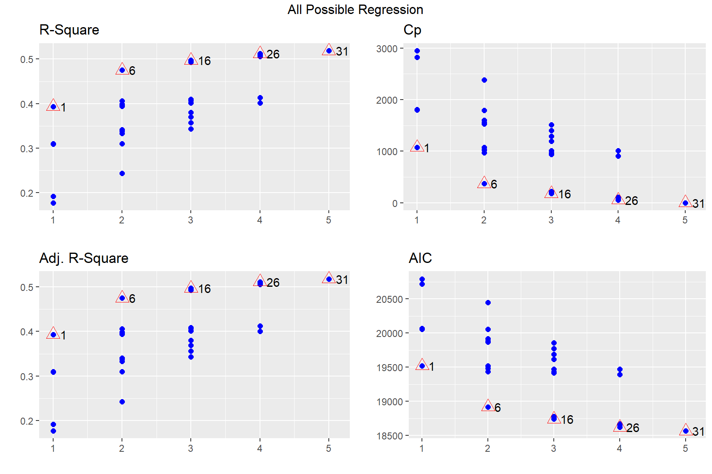
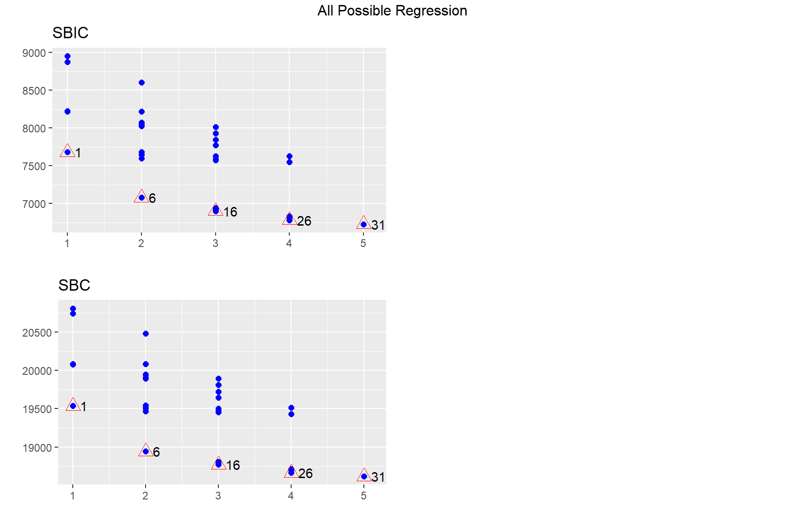
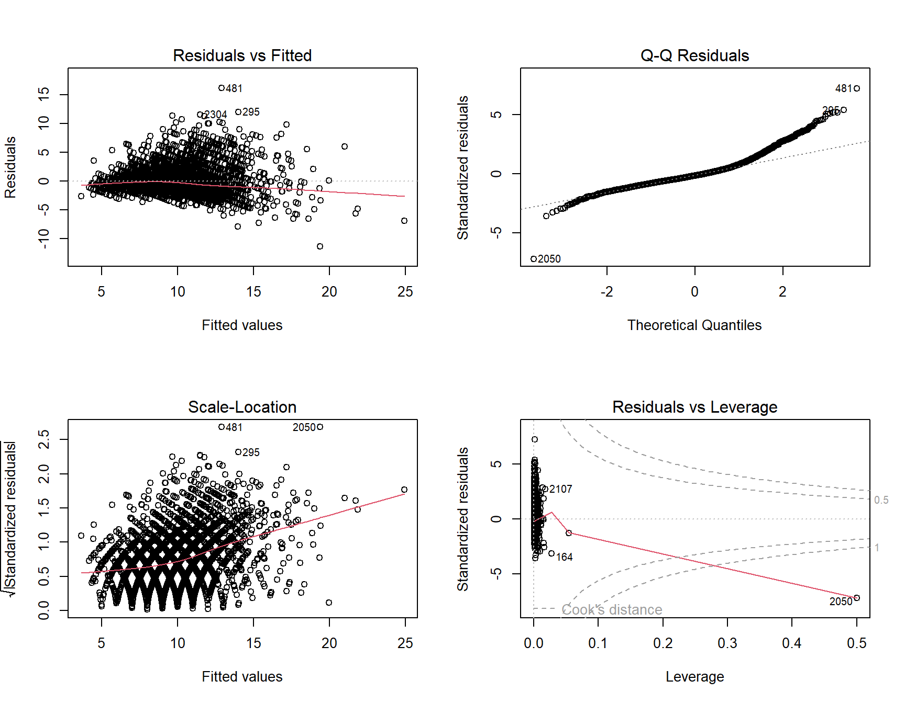
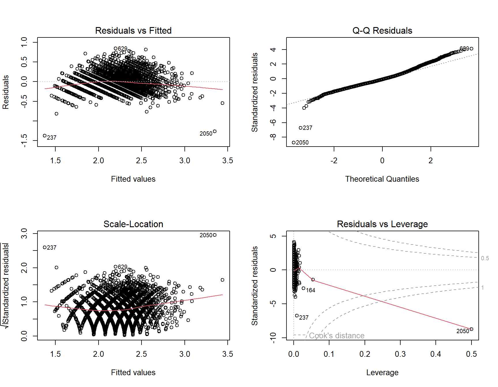
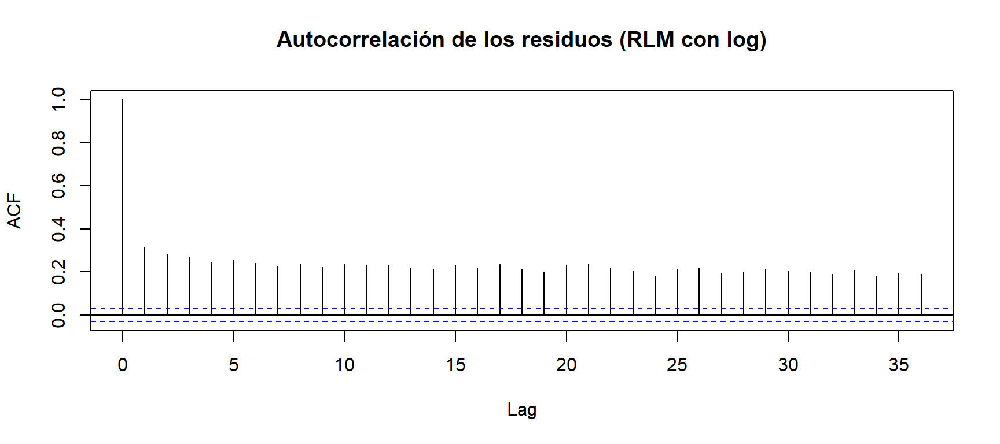
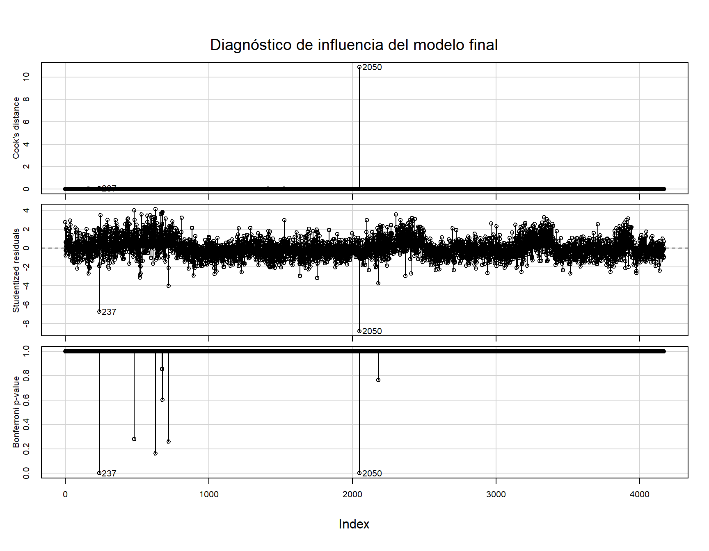

Capitulo 13 Regresión lineal múltiple
13.1 Variables dummy para Sexo
Sexo entra al modelo como dos variables dummy (Macho e Infante), y Hembra es la categoría de referencia:
## Macho Infante
## Hembra 0 0
## Macho 1 0
## Infante 0 1## (Intercept) SexoMacho SexoInfante
## 1 1 1 0
## 2 1 1 0
## 3 1 0 0
## 4 1 1 0
## 5 1 0 1
## 6 1 0 113.2 Modelo completo
\[\text{Anillos}_i = \beta_0 + \beta_1 D_{Macho,i} + \beta_2 D_{Infante,i} + \beta_3 \text{Largo}_i + \dots + \beta_9 \text{Peso_caparazon}_i + \varepsilon_i\]
f_completo <- reformulate(c("Sexo", predictores), response = "Anillos")
rlm_completo <- eval(bquote(lm(.(f_completo), data = abalone)))
summary(rlm_completo)##
## Call:
## lm(formula = Anillos ~ Sexo + Largo + Diametro + Altura + Peso +
## Peso_carne + Peso_visceras + Peso_caparazon, data = abalone)
##
## Residuals:
## Min 1Q Median 3Q Max
## -10.4324 -1.3010 -0.3302 0.8729 13.8132
##
## Coefficients:
## Estimate Std. Error t value Pr(>|t|)
## (Intercept) 3.8072622 0.2919431 13.041 < 2e-16 ***
## SexoMacho 0.0651678 0.0831324 0.784 0.433
## SexoInfante -0.8229306 0.1021361 -8.057 1.01e-15 ***
## Largo -0.0009994 0.0090247 -0.111 0.912
## Diametro 0.0551387 0.0111112 4.962 7.24e-07 ***
## Altura 0.0538320 0.0077039 6.988 3.24e-12 ***
## Peso 0.0484208 0.0037351 12.964 < 2e-16 ***
## Peso_carne -0.1039597 0.0042314 -24.568 < 2e-16 ***
## Peso_visceras -0.0549921 0.0064858 -8.479 < 2e-16 ***
## Peso_caparazon 0.0397579 0.0057729 6.887 6.56e-12 ***
## ---
## Signif. codes: 0 '***' 0.001 '**' 0.01 '*' 0.05 '.' 0.1 ' ' 1
##
## Residual standard error: 2.188 on 4161 degrees of freedom
## Multiple R-squared: 0.5402, Adjusted R-squared: 0.5392
## F-statistic: 543.1 on 9 and 4161 DF, p-value: < 2.2e-16## 2.5 % 97.5 %
## (Intercept) 3.23506419 4.37946017
## SexoMacho -0.09776870 0.22810423
## SexoInfante -1.02311375 -0.62274749
## Largo -0.01868743 0.01668859
## Diametro 0.03336124 0.07691623
## Altura 0.03873266 0.06893129
## Peso 0.04110022 0.05574139
## Peso_carne -0.11225319 -0.09566627
## Peso_visceras -0.06770405 -0.04228021
## Peso_caparazon 0.02844311 0.05107263## Analysis of Variance Table
##
## Response: Anillos
## Df Sum Sq Mean Sq F value Pr(>F)
## Sexo 2 8317.8 4158.9 868.6244 < 2.2e-16 ***
## Largo 1 6126.7 6126.7 1279.6025 < 2.2e-16 ***
## Diametro 1 777.2 777.2 162.3316 < 2.2e-16 ***
## Altura 1 753.9 753.9 157.4657 < 2.2e-16 ***
## Peso 1 2.9 2.9 0.6058 0.4364
## Peso_carne 1 6560.3 6560.3 1370.1698 < 2.2e-16 ***
## Peso_visceras 1 636.9 636.9 133.0144 < 2.2e-16 ***
## Peso_caparazon 1 227.1 227.1 47.4298 6.556e-12 ***
## Residuals 4161 19922.6 4.8
## ---
## Signif. codes: 0 '***' 0.001 '**' 0.01 '*' 0.05 '.' 0.1 ' ' 1INTERPRETACIÓN El modelo de regresión lineal múltiple es estadísticamente significativo (p < 0,001) y explica el 54,02 % de la variabilidad del número de anillos (R² = 0,5402). Las variables sexo, diámetro, altura, peso, peso de carne, peso de vísceras y peso del caparazón presentan asociaciones significativas con el número de anillos, mientras que el largo y la categoría macho no muestran efectos significativos en los coeficientes del modelo. Se destaca que los infantes presentan un menor número de anillos respecto a las hembras y que el peso de carne tiene una relación negativa con esta variable. En general, el modelo permite explicar mejor el número de anillos al considerar simultáneamente las características físicas y el sexo de los abulones.
13.3 Análisis de multicolinealidad
# VIF (car)
tabla_vif <- function(modelo) {
v <- vif(modelo)
if (is.matrix(v)) {
# Con factores, car::vif devuelve el GVIF; GVIF^(1/(2gl)) al cuadrado es comparable con el VIF
tibble(Variable = rownames(v), VIF = v[, "GVIF^(1/(2*Df))"]^2)
} else {
tibble(Variable = names(v), VIF = unname(v))
}
}
vif_completo <- tabla_vif(rlm_completo) %>%
mutate(Problema = ifelse(VIF > 10, "Multicolinealidad severa",
ifelse(VIF > 5, "Moderada", "Aceptable")))
vif_completo %>% tabla("VIF del modelo completo", d = 2)| Variable | VIF | Problema |
|---|---|---|
| Sexo | 1.24 | Aceptable |
| Largo | 40.85 | Multicolinealidad severa |
| Diametro | 42.28 | Multicolinealidad severa |
| Altura | 3.60 | Aceptable |
| Peso | 116.74 | Multicolinealidad severa |
| Peso_carne | 30.75 | Multicolinealidad severa |
| Peso_visceras | 17.59 | Multicolinealidad severa |
| Peso_caparazon | 22.49 | Multicolinealidad severa |
## [1] 2259.169# Diagnóstico con mctest (solo predictores numéricos)
rlm_num <- lm(reformulate(predictores, "Anillos"), data = abalone)
mctest(rlm_num, type = "b")##
## Call:
## omcdiag(mod = mod, Inter = Inter, detr = detr, red = red, conf = conf,
## theil = theil, cn = cn)
##
##
## Overall Multicollinearity Diagnostics
##
## MC Results detection
## Determinant |X'X|: 0.0000 1
## Farrar Chi-Square: 64952.2298 1
## Red Indicator: 0.8938 1
## Sum of Lambda Inverse: 273.0993 1
## Theil's Method: 3.3499 1
## Condition Number: 106.5749 1
##
## 1 --> COLLINEARITY is detected by the test
## 0 --> COLLINEARITY is not detected by the test
##
##
## ===================================
##
## Call:
## imcdiag(mod = mod, method = method, corr = FALSE, vif = vif,
## tol = tol, conf = conf, cvif = cvif, ind1 = ind1, ind2 = ind2,
## leamer = leamer, all = all)
##
##
## All Individual Multicollinearity Diagnostics Result
##
## VIF TOL Wi Fi Leamer CVIF Klein IND1
## Largo 40.6759 0.0246 27535.050 33050.00 0.1568 -17.9958 1 0e+00
## Diametro 41.7474 0.0240 28278.716 33942.61 0.1548 -18.4699 1 0e+00
## Altura 3.5749 0.2797 1787.012 2144.93 0.5289 -1.5816 1 4e-04
## Peso 116.5802 0.0086 80212.661 96278.31 0.0926 -51.5775 1 0e+00
## Peso_carne 30.5436 0.0327 20503.286 24609.85 0.1809 -13.5131 1 0e+00
## Peso_visceras 17.4944 0.0572 11447.146 13739.87 0.2391 -7.7399 1 1e-04
## Peso_caparazon 22.4827 0.0445 14909.020 17895.12 0.2109 -9.9468 1 1e-04
## IND2
## Largo 1.0458
## Diametro 1.0465
## Altura 0.7723
## Peso 1.0630
## Peso_carne 1.0371
## Peso_visceras 1.0109
## Peso_caparazon 1.0245
##
## 1 --> COLLINEARITY is detected by the test
## 0 --> COLLINEARITY is not detected by the test
##
## Largo , coefficient(s) are non-significant may be due to multicollinearity
##
## R-square of y on all x: 0.5298
##
## * use method argument to check which regressors may be the reason of collinearity
## ===================================Interpretación: Los resultados evidencian problemas importantes de multicolinealidad entre las variables explicativas, especialmente en peso (VIF = 116,58), diámetro (VIF = 41,75) y largo (VIF = 40,68). Esto indica una alta correlación entre algunas características físicas de los abulones, lo que puede afectar la estabilidad y precisión de los coeficientes del modelo. Además, el largo presenta un coeficiente no significativo posiblemente debido a esta multicolinealidad. Por lo tanto, es necesario considerar la selección o reducción de variables para mejorar el modelo.
# Se elimina de a una la variable con mayor VIF hasta que todas tengan VIF <= 10
vars_vif <- c("Sexo", predictores)
eliminadas_vif <- c()
repeat {
m_tmp <- lm(reformulate(vars_vif, "Anillos"), data = abalone)
tv <- tabla_vif(m_tmp)
if (max(tv$VIF) <= 10) break
peor <- tv$Variable[which.max(tv$VIF)]
eliminadas_vif <- c(eliminadas_vif, peor)
vars_vif <- setdiff(vars_vif, peor)
}
eliminadas_vif## [1] "Peso" "Diametro" "Peso_visceras"## [1] "Sexo" "Largo" "Altura" "Peso_carne"
## [5] "Peso_caparazon"f_vif <- reformulate(vars_vif, "Anillos")
rlm_vif <- eval(bquote(lm(.(f_vif), data = abalone)))
tabla_vif(rlm_vif) %>% tabla("VIF del modelo depurado", d = 2)| Variable | VIF |
|---|---|
| Sexo | 1.22 |
| Largo | 7.88 |
| Altura | 3.54 |
| Peso_carne | 6.25 |
| Peso_caparazon | 6.74 |
## [1] 1280.604##
## Call:
## lm(formula = Anillos ~ Sexo + Largo + Altura + Peso_carne + Peso_caparazon,
## data = abalone)
##
## Residuals:
## Min 1Q Median 3Q Max
## -11.3845 -1.3401 -0.3560 0.8547 16.1167
##
## Coefficients:
## Estimate Std. Error t value Pr(>|t|)
## (Intercept) 3.854882 0.295813 13.031 < 2e-16 ***
## SexoMacho 0.046559 0.084864 0.549 0.583
## SexoInfante -0.918970 0.103021 -8.920 < 2e-16 ***
## Largo 0.038617 0.004054 9.527 < 2e-16 ***
## Altura 0.058310 0.007820 7.456 1.08e-13 ***
## Peso_carne -0.058864 0.001951 -30.174 < 2e-16 ***
## Peso_caparazon 0.102846 0.003232 31.819 < 2e-16 ***
## ---
## Signif. codes: 0 '***' 0.001 '**' 0.01 '*' 0.05 '.' 0.1 ' ' 1
##
## Residual standard error: 2.238 on 4164 degrees of freedom
## Multiple R-squared: 0.5185, Adjusted R-squared: 0.5179
## F-statistic: 747.5 on 6 and 4164 DF, p-value: < 2.2e-16# Prueba F para modelos anidados: ¿las variables eliminadas aportan algo?
anova(rlm_vif, rlm_completo)## Analysis of Variance Table
##
## Model 1: Anillos ~ Sexo + Largo + Altura + Peso_carne + Peso_caparazon
## Model 2: Anillos ~ Sexo + Largo + Diametro + Altura + Peso + Peso_carne +
## Peso_visceras + Peso_caparazon
## Res.Df RSS Df Sum of Sq F Pr(>F)
## 1 4164 20859
## 2 4161 19923 3 936.53 65.201 < 2.2e-16 ***
## ---
## Signif. codes: 0 '***' 0.001 '**' 0.01 '*' 0.05 '.' 0.1 ' ' 1INTERPRETACIÓN Los resultados muestran una reducción de la multicolinealidad en el modelo depurado. Sexo y Altura presentan valores VIF bajos, mientras que Largo, Peso_carne y Peso_caparazon tienen valores moderadamente elevados. Sin embargo, todos los VIF son inferiores a 10, por lo que no se evidencia multicolinealidad severa.
13.4 Selección de variables
13.4.1 Método de todas las regresiones posibles
todas_obj <- ols_step_all_possible(rlm_vif)
todas <- if (is.data.frame(todas_obj)) todas_obj else todas_obj$result
todas <- as_tibble(todas) %>%
select(any_of(c("n", "predictors", "rsquare", "adjr", "cp", "aic", "sbc")))
nrow(todas) # número de modelos evaluados## [1] 31# Mejor modelo para cada número de variables (según R2 ajustado)
mejores_k <- todas %>% group_by(n) %>% slice_max(adjr, n = 1) %>% ungroup()
mejores_k %>% tabla("Mejor modelo para cada número de variables", d = 3)| n | predictors | rsquare | adjr | cp | aic | sbc |
|---|---|---|---|---|---|---|
| 1 | Peso_caparazon | 0.394 | 0.393 | 1077.727 | 19519.02 | 19538.03 |
| 2 | Peso_carne Peso_caparazon | 0.475 | 0.475 | 373.886 | 18918.14 | 18943.49 |
| 3 | Largo Peso_carne Peso_caparazon | 0.498 | 0.497 | 182.549 | 18738.58 | 18770.26 |
| 4 | Sexo Largo Peso_carne Peso_caparazon | 0.512 | 0.512 | 60.594 | 18619.90 | 18664.25 |
| 5 | Sexo Largo Altura Peso_carne Peso_caparazon | 0.519 | 0.518 | 7.000 | 18566.58 | 18617.26 |
Interpretacion: La tabla muestra que, al aumentar el número de variables, mejora la capacidad explicativa del modelo: el \(R^2\) ajustado aumenta de 0.393 a 0.518. El mejor modelo de cinco variables incluye Sexo, Largo, Altura, Peso_carne y Peso_caparazon, y presenta el menor valor de Cp (7.00) entre los modelos evaluados. Esto indica que estas variables ofrecen el mejor ajuste dentro de las alternativas comparadas.


Interpretacion: Los gráficos muestran que, a medida que aumenta el número de variables explicativas, mejora el ajuste del modelo, reflejado en el incremento del \(R^2\) y del \(R^2\) ajustado. Asimismo, los criterios Cp, AIC, SBIC y SBC disminuyen, alcanzando sus valores más bajos en el modelo de cinco variables. Por lo tanto, los resultados respaldan la selección del modelo que incluye Sexo, Largo, Altura, Peso_carne y Peso_caparazon, ya que presenta el mejor ajuste entre los modelos evaluados.
13.4.2 Selección secuencial (stepAIC)
rlm_nulo <- lm(Anillos ~ 1, data = abalone)
n_obs <- nrow(abalone)
sel_forward <- MASS::stepAIC(rlm_nulo, scope = list(lower = ~ 1, upper = formula(rlm_vif)),
direction = "forward", trace = FALSE)
sel_backward <- MASS::stepAIC(rlm_vif, direction = "backward", trace = FALSE)
sel_both <- MASS::stepAIC(rlm_vif, direction = "both", trace = FALSE)
sel_bic <- MASS::stepAIC(rlm_vif, direction = "both", k = log(n_obs), trace = FALSE)
modelos_sel <- list(sel_forward, sel_backward, sel_both, sel_bic)
tibble(
Metodo = c("Forward (AIC)", "Backward (AIC)", "Ambas direcciones (AIC)",
"Ambas direcciones (BIC)"),
Variables = map_chr(modelos_sel, ~ paste(attr(terms(.x), "term.labels"), collapse = " + ")),
R2_aj = map_dbl(modelos_sel, ~ summary(.x)$adj.r.squared)
) %>% tabla("Resultados de la selección secuencial", d = 4)| Metodo | Variables | R2_aj |
|---|---|---|
| Forward (AIC) | Peso_caparazon + Peso_carne + Largo + Sexo + Altura | 0.5179 |
| Backward (AIC) | Sexo + Largo + Altura + Peso_carne + Peso_caparazon | 0.5179 |
| Ambas direcciones (AIC) | Sexo + Largo + Altura + Peso_carne + Peso_caparazon | 0.5179 |
| Ambas direcciones (BIC) | Sexo + Largo + Altura + Peso_carne + Peso_caparazon | 0.5179 |
##
## Call:
## lm(formula = Anillos ~ Sexo + Largo + Altura + Peso_carne + Peso_caparazon,
## data = abalone)
##
## Residuals:
## Min 1Q Median 3Q Max
## -11.3845 -1.3401 -0.3560 0.8547 16.1167
##
## Coefficients:
## Estimate Std. Error t value Pr(>|t|)
## (Intercept) 3.854882 0.295813 13.031 < 2e-16 ***
## SexoMacho 0.046559 0.084864 0.549 0.583
## SexoInfante -0.918970 0.103021 -8.920 < 2e-16 ***
## Largo 0.038617 0.004054 9.527 < 2e-16 ***
## Altura 0.058310 0.007820 7.456 1.08e-13 ***
## Peso_carne -0.058864 0.001951 -30.174 < 2e-16 ***
## Peso_caparazon 0.102846 0.003232 31.819 < 2e-16 ***
## ---
## Signif. codes: 0 '***' 0.001 '**' 0.01 '*' 0.05 '.' 0.1 ' ' 1
##
## Residual standard error: 2.238 on 4164 degrees of freedom
## Multiple R-squared: 0.5185, Adjusted R-squared: 0.5179
## F-statistic: 747.5 on 6 and 4164 DF, p-value: < 2.2e-16INTERPRETACIÓN Los resultados de la selección secuencial muestran que los cuatro métodos (Forward, Backward, ambas direcciones con AIC y BIC) coinciden en elegir las mismas cinco variables: Sexo, Largo, Altura, Peso_carne y Peso_caparazon, con un \(R^2\) ajustado de 0.5179. Al ajustar la regresión múltiple con estas variables, se obtiene un modelo estadísticamente significativo (p < 0.001), que explica el 51.85 % de la variabilidad de los Anillos. Individualmente, Largo, Altura, Peso_carne, Peso_caparazon y SexoInfante son significativos, mientras que SexoMacho no presenta un efecto significativo. Estos resultados respaldan la elección del modelo de cinco variables.
13.5 Diagnóstico y transformación del modelo seleccionado

par(mfrow = c(1, 1))
sup_sel <- pruebas_supuestos(modelo_sel)
sup_sel %>% tabla("Supuestos de la RLM seleccionada", d = 4)| Supuesto | Prueba | Estadistico | p_valor | Conclusion |
|---|---|---|---|---|
| Normalidad | Shapiro-Wilk | 0.9176 | 0 | No se cumple (se rechaza H0) |
| Media cero | t de una muestra (mu = 0) | 0.0000 | 1 | Se cumple (no se rechaza H0) |
| Varianza constante | Breusch-Pagan | 435.9818 | 0 | No se cumple (se rechaza H0) |
| Varianza constante | ncvTest (car) | 832.4774 | 0 | No se cumple (se rechaza H0) |
| Independencia | Durbin-Watson | 1.4176 | 0 | No se cumple (se rechaza H0) |
Los gráficos y las pruebas indican que el modelo incumple varios supuestos: normalidad, varianza constante e independencia de los residuos, mientras que el supuesto de media cero sí se cumple. Además, se observan valores atípicos y posibles observaciones influyentes. Por tanto, aunque el modelo es estadísticamente significativo, sus resultados deben interpretarse con precaución.
Por las mismas razones que en la RLS, se ajusta el modelo con \(\log(\text{Anillos})\) como respuesta:
##
## Call:
## lm(formula = log(Anillos) ~ Sexo + Largo + Altura + Peso_carne +
## Peso_caparazon, data = abalone)
##
## Residuals:
## Min 1Q Median 3Q Max
## -1.37602 -0.13238 -0.01838 0.11190 0.84536
##
## Coefficients:
## Estimate Std. Error t value Pr(>|t|)
## (Intercept) 1.3454740 0.0271785 49.505 <2e-16 ***
## SexoMacho 0.0081284 0.0077971 1.042 0.297
## SexoInfante -0.1007485 0.0094653 -10.644 <2e-16 ***
## Largo 0.0078120 0.0003724 20.976 <2e-16 ***
## Altura 0.0065618 0.0007185 9.132 <2e-16 ***
## Peso_carne -0.0057355 0.0001792 -32.000 <2e-16 ***
## Peso_caparazon 0.0071157 0.0002970 23.961 <2e-16 ***
## ---
## Signif. codes: 0 '***' 0.001 '**' 0.01 '*' 0.05 '.' 0.1 ' ' 1
##
## Residual standard error: 0.2056 on 4164 degrees of freedom
## Multiple R-squared: 0.5858, Adjusted R-squared: 0.5852
## F-statistic: 981.5 on 6 and 4164 DF, p-value: < 2.2e-16
par(mfrow = c(1, 1))
sup_log <- pruebas_supuestos(rlm_log)
sup_log %>% tabla("Supuestos de la RLM con log(Anillos)", d = 4)| Supuesto | Prueba | Estadistico | p_valor | Conclusion |
|---|---|---|---|---|
| Normalidad | Shapiro-Wilk | 0.9789 | 0 | No se cumple (se rechaza H0) |
| Media cero | t de una muestra (mu = 0) | 0.0000 | 1 | Se cumple (no se rechaza H0) |
| Varianza constante | Breusch-Pagan | 389.7781 | 0 | No se cumple (se rechaza H0) |
| Varianza constante | ncvTest (car) | 20.4182 | 0 | No se cumple (se rechaza H0) |
| Independencia | Durbin-Watson | 1.3708 | 0 | No se cumple (se rechaza H0) |
El modelo logarítmico es estadísticamente significativo (p < 0,001) y explica el 58,58 % de la variabilidad de los Anillos, mejorando el ajuste del modelo anterior. Las variables SexoInfante, Largo, Altura, Peso_carne y Peso_caparazon son significativas, mientras que SexoMacho no lo es. En los gráficos de diagnóstico se observa una mejora en el comportamiento de los residuos, aunque persisten desviaciones de la normalidad, variaciones en la dispersión y observaciones atípicas e influyentes, especialmente la 2050. Por tanto, el modelo presenta un mejor ajuste, pero aún tiene algunas limitaciones en sus supuestos.

Interpretacion: El gráfico de autocorrelación de los residuos del modelo de regresión lineal múltiple (RLM) con transformación logarítmica muestra que las autocorrelaciones son positivas y significativas en varios rezagos, ya que superan las bandas de confianza. Esto indica que los residuos presentan dependencia entre sí, por lo que no se cumple el supuesto de independencia de los errores. En consecuencia, el modelo podría no estar capturando completamente la estructura de los datos.
Interpretacion: El modelo de regresión lineal múltiple indica que el largo, la altura y el peso del caparazón presentan una relación positiva con el logaritmo del número de anillos, mientras que el peso de la carne y el sexo infantil muestran una relación negativa. El sexo masculino presenta una relación positiva muy pequeña. Estos resultados sugieren que las características físicas del abalón pueden estar relacionadas con su edad estimada; sin embargo, es necesario revisar la significancia estadística de los coeficientes para determinar cuáles variables tienen una relación significativa.
13.6 Identificación de atípicos y observaciones influyentes
n_f <- nobs(modelo_final)
# Residuos studentizados: |r| > 3 indica atípico
r_stud <- rstudent(modelo_final)
sum(abs(r_stud) > 3)## [1] 33## rstudent unadjusted p-value Bonferroni p
## 2050 -8.808691 1.8263e-18 7.6175e-15
## 237 -6.758639 1.5860e-11 6.6152e-08## [1] 199diag_inf <- tibble(id = abalone$id, r_stud = r_stud, cook = cook)
diag_inf %>%
arrange(desc(cook)) %>%
head(10) %>%
left_join(abalone %>% select(id, Sexo, all_of(predictores), Anillos), by = "id") %>%
tabla("Observaciones con mayor distancia de Cook", d = 3)| id | r_stud | cook | Sexo | Largo | Diametro | Altura | Peso | Peso_carne | Peso_visceras | Peso_caparazon | Anillos |
|---|---|---|---|---|---|---|---|---|---|---|---|
| 2052 | -8.809 | 10.890 | Hembra | 91 | 71 | 226 | 118.8 | 66.4 | 23.2 | 26.7 | 8 |
| 237 | -6.759 | 0.060 | Infante | 15 | 11 | 2 | 0.4 | 0.2 | 0.1 | 0.3 | 1 |
| 164 | -2.705 | 0.029 | Hembra | 145 | 112 | 42 | 428.2 | 130.0 | 79.6 | 201.0 | 18 |
| 1529 | 2.939 | 0.017 | Macho | 145 | 115 | 48 | 442.0 | 270.2 | 82.6 | 100.3 | 13 |
| 1418 | -1.433 | 0.017 | Macho | 141 | 113 | 103 | 442.0 | 221.5 | 97.3 | 102.4 | 10 |
| 720 | -4.009 | 0.012 | Infante | 30 | 20 | 5 | 3.0 | 0.9 | 0.8 | 1.0 | 2 |
| 3714 | 2.527 | 0.010 | Macho | 142 | 111 | 35 | 428.0 | 249.1 | 74.5 | 86.8 | 11 |
| 1210 | 2.081 | 0.010 | Hembra | 156 | 126 | 43 | 531.4 | 297.6 | 99.7 | 117.2 | 11 |
| 165 | -1.997 | 0.009 | Hembra | 130 | 109 | 46 | 350.4 | 112.1 | 57.9 | 163.0 | 16 |
| 2162 | -1.828 | 0.008 | Hembra | 143 | 113 | 48 | 439.9 | 144.9 | 93.0 | 177.0 | 17 |
Interpretacion: El análisis de residuos identifica dos observaciones con valores atípicos significativos: las observaciones 2050 y 237, cuyos valores p ajustados por Bonferroni son inferiores a 0.05. Además, la observación 2052 presenta la mayor distancia de Cook (10.890), indicando una influencia considerable sobre el modelo. Esto sugiere que existen observaciones que pueden afectar significativamente el ajuste de la regresión, por lo que sería conveniente revisarlas antes de realizar conclusiones definitivas.
influenceIndexPlot(modelo_final, vars = c("Cook", "Studentized", "Bonf"),
main = "Diagnóstico de influencia del modelo final")
El gráfico de diagnóstico muestra que la mayoría de las observaciones presentan una influencia baja sobre el modelo. Sin embargo, se destacan las observaciones 2050 y 237, que tienen residuos studentizados extremos y valores de distancia de Cook elevados, especialmente la observación 2050.
ids_influyentes <- diag_inf$id[diag_inf$cook > 4 / n_f]
modelo_sin_inf <- update(modelo_final, data = abalone %>% filter(!id %in% ids_influyentes))
tibble(
Termino = names(coef(modelo_final)),
Con_todos = coef(modelo_final),
Sin_influyentes = coef(modelo_sin_inf)[names(coef(modelo_final))]
) %>%
mutate(Cambio_pct = (Sin_influyentes - Con_todos) / abs(Con_todos) * 100) %>%
tabla("Coeficientes con y sin observaciones influyentes", d = 4)| Termino | Con_todos | Sin_influyentes | Cambio_pct |
|---|---|---|---|
| (Intercept) | 1.3455 | 1.3918 | 3.4457 |
| SexoMacho | 0.0081 | 0.0102 | 25.9104 |
| SexoInfante | -0.1007 | -0.1009 | -0.1736 |
| Largo | 0.0078 | 0.0061 | -21.5205 |
| Altura | 0.0066 | 0.0106 | 61.4110 |
| Peso_carne | -0.0057 | -0.0058 | -1.8840 |
| Peso_caparazon | 0.0071 | 0.0075 | 4.7290 |
INTERPRETACIÓN Al comparar los coeficientes del modelo con todas las observaciones y sin las influyentes, se evidencia que algunas variables presentan cambios importantes. Destaca Altura, cuyo coeficiente aumenta un 61.41%, mientras que Largo disminuye un 21.52%. También se observa un cambio del 25.91% en SexoMacho. En contraste, SexoInfante y Peso_carne mantienen coeficientes prácticamente iguales.
13.7 Modelo final: inferencia e interpretación
##
## Call:
## lm(formula = log(Anillos) ~ Sexo + Largo + Altura + Peso_carne +
## Peso_caparazon, data = abalone)
##
## Residuals:
## Min 1Q Median 3Q Max
## -1.37602 -0.13238 -0.01838 0.11190 0.84536
##
## Coefficients:
## Estimate Std. Error t value Pr(>|t|)
## (Intercept) 1.3454740 0.0271785 49.505 <2e-16 ***
## SexoMacho 0.0081284 0.0077971 1.042 0.297
## SexoInfante -0.1007485 0.0094653 -10.644 <2e-16 ***
## Largo 0.0078120 0.0003724 20.976 <2e-16 ***
## Altura 0.0065618 0.0007185 9.132 <2e-16 ***
## Peso_carne -0.0057355 0.0001792 -32.000 <2e-16 ***
## Peso_caparazon 0.0071157 0.0002970 23.961 <2e-16 ***
## ---
## Signif. codes: 0 '***' 0.001 '**' 0.01 '*' 0.05 '.' 0.1 ' ' 1
##
## Residual standard error: 0.2056 on 4164 degrees of freedom
## Multiple R-squared: 0.5858, Adjusted R-squared: 0.5852
## F-statistic: 981.5 on 6 and 4164 DF, p-value: < 2.2e-16## Analysis of Variance Table
##
## Response: log(Anillos)
## Df Sum Sq Mean Sq F value Pr(>F)
## Sexo 2 102.405 51.203 1210.85 < 2.2e-16 ***
## Largo 1 89.019 89.019 2105.14 < 2.2e-16 ***
## Altura 1 7.283 7.283 172.24 < 2.2e-16 ***
## Peso_carne 1 26.044 26.044 615.89 < 2.2e-16 ***
## Peso_caparazon 1 24.279 24.279 574.14 < 2.2e-16 ***
## Residuals 4164 176.081 0.042
## ---
## Signif. codes: 0 '***' 0.001 '**' 0.01 '*' 0.05 '.' 0.1 ' ' 1coef_final <- tibble(
Termino = names(coef(modelo_final)),
Estimacion = coef(modelo_final),
Error_est = coef(s_final)[, 2],
t = coef(s_final)[, 3],
p_valor = coef(s_final)[, 4],
IC95_inf = confint.default(modelo_final)[, 1],
IC95_sup = confint.default(modelo_final)[, 2]
)
if (es_log_final) {
coef_final <- coef_final %>% mutate(Efecto_pct = (exp(Estimacion) - 1) * 100)
}
coef_final %>% tabla("Coeficientes del modelo final", d = 4)| Termino | Estimacion | Error_est | t | p_valor | IC95_inf | IC95_sup | Efecto_pct |
|---|---|---|---|---|---|---|---|
| (Intercept) | 1.3455 | 0.0272 | 49.5050 | 0.0000 | 1.2922 | 1.3987 | 284.0006 |
| SexoMacho | 0.0081 | 0.0078 | 1.0425 | 0.2972 | -0.0072 | 0.0234 | 0.8162 |
| SexoInfante | -0.1007 | 0.0095 | -10.6440 | 0.0000 | -0.1193 | -0.0822 | -9.5840 |
| Largo | 0.0078 | 0.0004 | 20.9761 | 0.0000 | 0.0071 | 0.0085 | 0.7843 |
| Altura | 0.0066 | 0.0007 | 9.1324 | 0.0000 | 0.0052 | 0.0080 | 0.6583 |
| Peso_carne | -0.0057 | 0.0002 | -32.0002 | 0.0000 | -0.0061 | -0.0054 | -0.5719 |
| Peso_caparazon | 0.0071 | 0.0003 | 23.9613 | 0.0000 | 0.0065 | 0.0077 | 0.7141 |
# Texto para interpretar las dummies de Sexo (funciona con o sin log)
efecto_txt <- function(termino) {
b <- coef_final$Estimacion[coef_final$Termino == termino]
if (es_log_final) paste0(fmt((exp(b) - 1) * 100, 1), " % de anillos")
else paste0(fmt(b, 2), " anillos")
}
p_term <- function(termino) fp(coef_final$p_valor[coef_final$Termino == termino])
tabla_vif(modelo_final) %>% tabla("VIF del modelo final", d = 2)| Variable | VIF |
|---|---|
| Sexo | 1.22 |
| Largo | 7.88 |
| Altura | 3.54 |
| Peso_carne | 6.25 |
| Peso_caparazon | 6.74 |
INTERPRETACIÓN El modelo de regresión lineal múltiple es estadísticamente significativo (p < 0.001) y explica aproximadamente el 58.58% de la variabilidad del logaritmo del número de anillos. Las variables SexoInfante, Largo, Altura, Peso_carne y Peso_caparazon presentan relaciones estadísticamente significativas con la variable respuesta. En cambio, SexoMacho no resulta significativa (p = 0.2972), por lo que no se evidencia una diferencia estadística respecto a la categoría de referencia. El largo, la altura y el peso del caparazón tienen efectos positivos, mientras que el peso de la carne presenta un efecto negativo. Además, el análisis de VIF muestra que Largo, Peso_carne y Peso_caparazon presentan valores relativamente elevados, lo que sugiere cierta multicolinealidad entre las variables físicas, aunque no necesariamente severa. En conjunto, el modelo tiene una capacidad explicativa moderada y permite identificar características asociadas con la edad estimada del abalón.
13.8 Inferencia para la respuesta: intervalos de confianza y predicción
Se predice el número de anillos de un abulón “típico” de cada sexo (medianas de cada variable dentro del grupo).
vars_num_final <- intersect(predictores, all.vars(formula(modelo_final)))
nuevos <- abalone %>%
group_by(Sexo) %>%
summarise(across(all_of(vars_num_final), median), .groups = "drop")
back <- if (es_log_final) exp else identity
pred_ic <- back(predict(modelo_final, nuevos, interval = "confidence"))
pred_ip <- back(predict(modelo_final, nuevos, interval = "prediction"))
pred_tabla <- nuevos %>%
mutate(
Anillos_est = pred_ic[, "fit"],
IC_inf = pred_ic[, "lwr"], IC_sup = pred_ic[, "upr"],
IP_inf = pred_ip[, "lwr"], IP_sup = pred_ip[, "upr"],
Edad_est = Anillos_est + 1.5
)
pred_tabla %>% tabla("Predicciones del modelo final para un abulón típico de cada sexo", d = 2)| Sexo | Largo | Altura | Peso_carne | Peso_caparazon | Anillos_est | IC_inf | IC_sup | IP_inf | IP_sup | Edad_est |
|---|---|---|---|---|---|---|---|---|---|---|
| Hembra | 118 | 32 | 88.10 | 59.0 | 10.93 | 10.81 | 11.06 | 7.30 | 16.36 | 12.43 |
| Macho | 116 | 31 | 84.35 | 55.2 | 10.72 | 10.61 | 10.84 | 7.16 | 16.05 | 12.22 |
| Infante | 87 | 22 | 33.85 | 22.6 | 7.66 | 7.57 | 7.74 | 5.11 | 11.46 | 9.16 |
INTERPRETACIÓN Las predicciones del modelo muestran que, para las características físicas seleccionadas, las hembras presentan una estimación de 10.93 anillos, los machos de 10.72 y los infantes de 7.66. Al sumar 1.5, se obtiene una edad estimada de 12.43 años para las hembras, 12.22 para los machos y 9.16 para los infantes. Los intervalos de confianza son relativamente estrechos, mientras que los intervalos de predicción son más amplios, reflejando la variabilidad esperada en individuos específicos. En general, el modelo estima una edad mayor para hembras y machos que para los infantes.
13.9 Comparación entre los modelos
resumen_modelo <- function(m, nombre) {
s <- summary(m)
tibble(
Modelo = nombre,
Respuesta = deparse(formula(m)[[2]]),
Predictores = length(coef(m)) - 1,
R2 = s$r.squared,
R2_aj = s$adj.r.squared,
Sigma = s$sigma
)
}
comparacion <- bind_rows(
resumen_modelo(rls, "RLS"),
resumen_modelo(rlm_completo, "RLM completo"),
resumen_modelo(rlm_vif, "RLM sin multicolinealidad"),
resumen_modelo(modelo_sel, "RLM seleccionado"),
resumen_modelo(rls_log, "RLS log-log"),
resumen_modelo(rlm_log, "RLM seleccionado con log")
)
comparacion %>% tabla("Comparación de los modelos", d = 4)| Modelo | Respuesta | Predictores | R2 | R2_aj | Sigma |
|---|---|---|---|---|---|
| RLS | Anillos | 1 | 0.3936 | 0.3934 | 2.5104 |
| RLM completo | Anillos | 9 | 0.5402 | 0.5392 | 2.1881 |
| RLM sin multicolinealidad | Anillos | 6 | 0.5185 | 0.5179 | 2.2382 |
| RLM seleccionado | Anillos | 6 | 0.5185 | 0.5179 | 2.2382 |
| RLS log-log | log(Anillos) | 1 | 0.5468 | 0.5467 | 0.2150 |
| RLM seleccionado con log | log(Anillos) | 6 | 0.5858 | 0.5852 | 0.2056 |
INTERPRETACIÓN La comparación muestra que el modelo de regresión lineal simple (RLS) con la variable Anillos explica el 39.36% de la variabilidad, mientras que el modelo de regresión lineal múltiple completo mejora su capacidad explicativa hasta un 54.02%. Al aplicar la transformación logarítmica, el modelo RLS log-log alcanza un R² de 54.68%, y el modelo RLM seleccionado con logaritmo obtiene el mejor resultado, con un R² de 58.58% y un R² ajustado de 58.52%. Además, presenta el menor error residual (Sigma = 0.2056). Por tanto, el modelo RLM seleccionado con transformación logarítmica ofrece el mejor ajuste entre los modelos comparados.